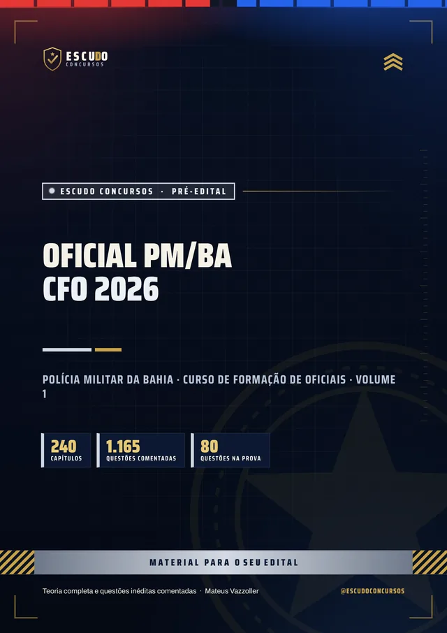
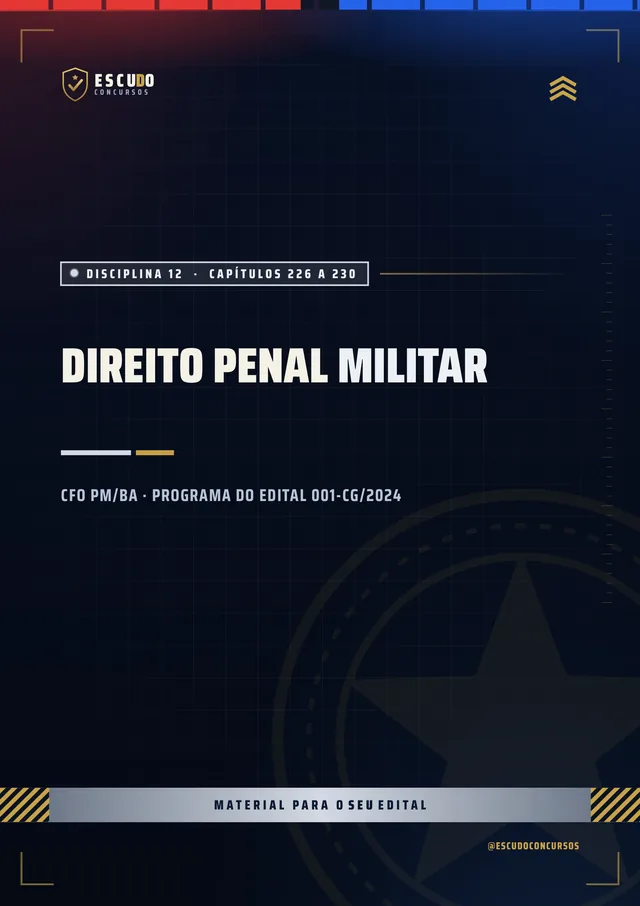
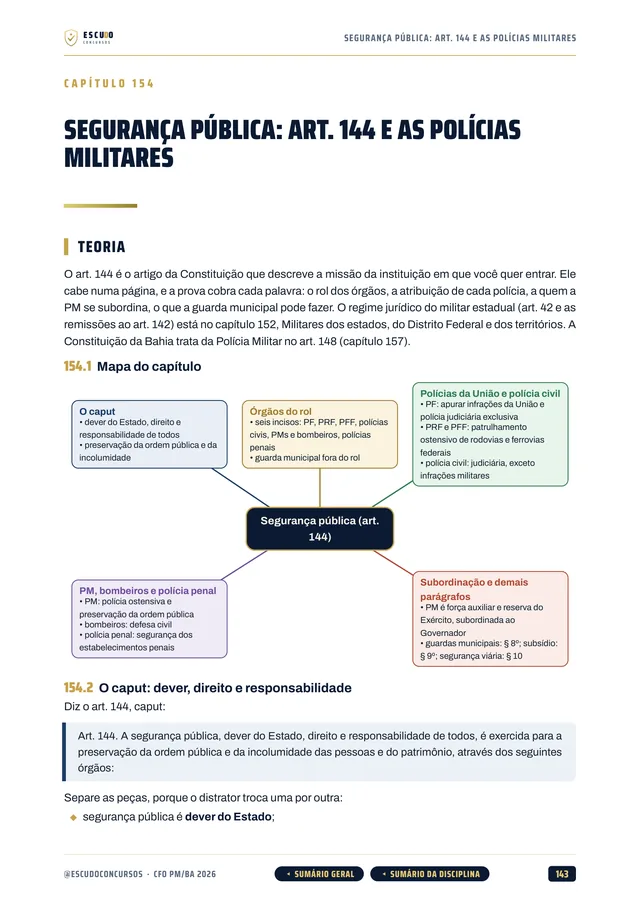
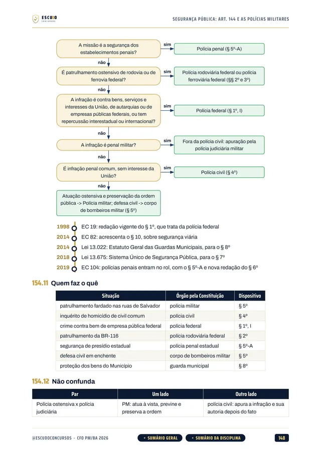
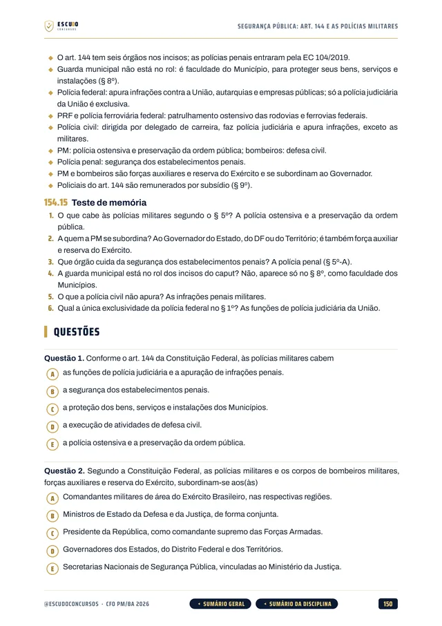
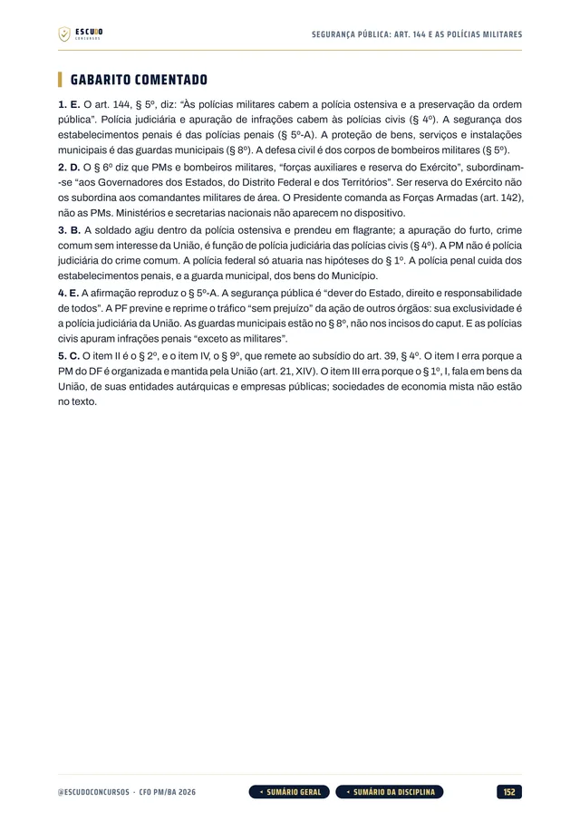
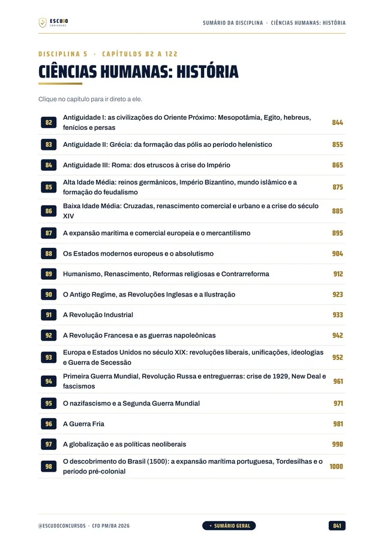
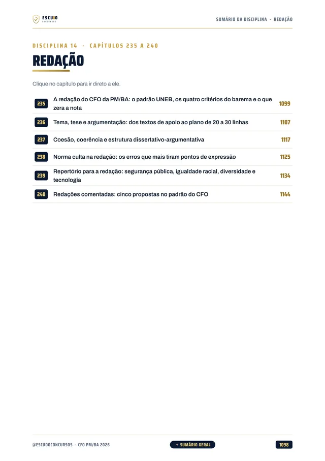
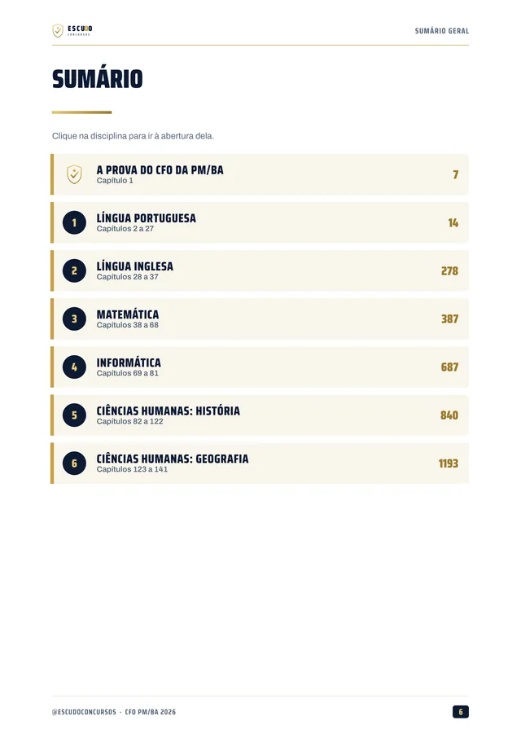
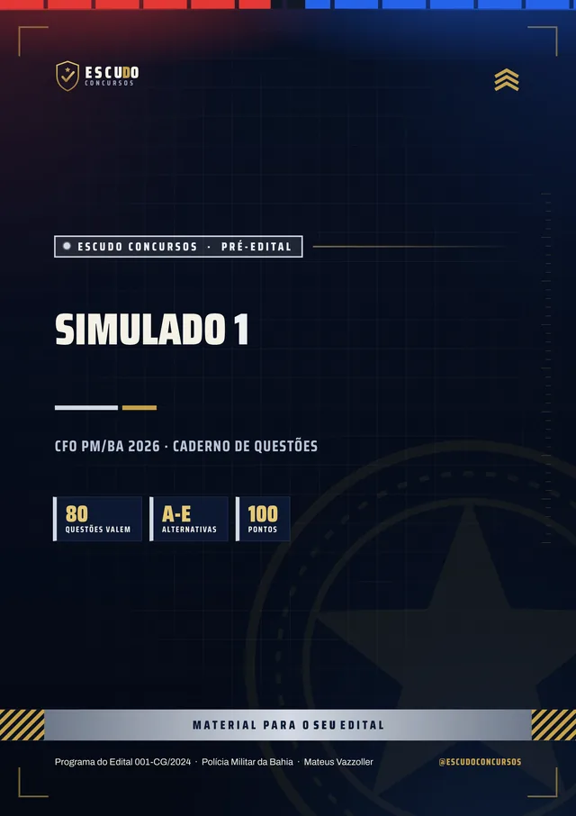

Simulado 1
No meio do caminho
Para medir onde você está e ajustar o estudo enquanto ainda dá tempo.
30 dias após a compra
Material independente, sem vínculo com a Polícia Militar da Bahia nem com a UNEB.


1.165questões
comentadas
ConcursoCFO PM/BA2026 · Oficial
Briefing
O concurso do CFO da Polícia Militar da Bahia foi anunciado em 19/06/2026, com 200 vagas de oficial, mas o edital ainda não saiu e a banca está em contratação. Quem estuda agora estuda pelo programa do último edital, sem esperar. Curso feito sobre o Edital PM/BM nº 001-CG/2024 (UNEB), na parte da PM do Anexo II, item por item, com a legislação da Bahia na redação vigente em 24/11/2026 e questões de 5 alternativas com gabarito comentado.
Pré-edital: baseado no Edital PM/BM nº 001-CG/2024 (UNEB). Concurso anunciado em 19/06/2026, com 200 vagas de oficial e banca em contratação. Atualização grátis quando sair o novo
de R$ 79,90 por 25% OFF
R$59,90
com o cupom PMBACFO até 31/12/2026. Pelo botão, o cupom já vai preenchido.
R$79,90
Curso completo, com acesso imediato.
Ainda não vai comprar? Receba o aviso quando sair o edital
Edital ainda não saiu
Deixe seu e-mail e o seu WhatsApp. No dia em que o edital sair, você recebe o resumo (vagas, salário, inscrições e o que mudou no programa) e um cupom só para quem está na lista. Sem spam: só o aviso do edital.
Seus dados ficam só com a ESCUDO e servem só para este aviso. Para sair da lista, é só responder o e-mail.
Terreno
O concurso
O concurso para o Curso de Formação de Oficiais da Polícia Militar da Bahia foi anunciado em 19/06/2026, com 200 vagas de oficial. Até a conferência de 24/11/2026, o edital ainda não tinha sido publicado, a banca estava em contratação e nenhuma data de inscrição ou de prova havia sido anunciada, e este curso não promete nenhuma.
Por isso o curso segue o programa e o formato do último edital do cargo, o Edital PM/BM nº 001-CG/2024 (CFOPM e CFOBM), publicado no Diário Oficial de 29/11/2024 e organizado pela UNEB, com 100 vagas para o CFO da PMBA. A prova foi aplicada em 16/02/2025: 80 questões de múltipla escolha, com cinco alternativas (A a E), em 5 horas, mais uma redação de 20 a 30 linhas. O programa da Polícia Militar está no Anexo II do edital.
Estudar agora pelo programa do último edital economiza meses. Quando o edital novo sair, a banca, o formato e o programa podem mudar: o programa será conferido item por item e o curso, ajustado.
| Disciplina | Questões | Capítulos |
|---|---|---|
| Língua Portuguesa | 20 | 26 |
| Língua Inglesa | 5 | 10 |
| Matemática | 10 | 31 |
| Informática | 5 | 13 |
| Ciências Humanas: História e Geografia | 20 | 60 |
| Direito: Constitucional (com a Constituição da Bahia), Direitos Humanos, Administrativo, Penal, Processual Penal e leis especiais, Penal Militar e Processual Penal Militar | 20 | 93 |
| Redação (20 a 30 linhas, de 0 a 100 pontos, fora das 80 questões) | 1 | 6 |
| Mais o capítulo 001, sobre como é a prova e como usar o curso. A objetiva vale 100 pontos (1,25 por questão). O edital novo pode mudar tudo isto. | 80 | 240 |
Protocolo
O formato
Você estuda lendo, no seu ritmo, pela área de membros da Hotmart ou com os arquivos baixados. O curso segue o programa da Polícia Militar no último edital do cargo (Edital PM/BM nº 001-CG/2024), disciplina por disciplina, com a legislação federal e a da Bahia conferida no texto oficial vigente em 24/11/2026. Quando sair o edital novo, vale o que ele disser.
Reconhecimento
Páginas reais do PDF
Toque numa página para ver em tamanho maior.





100% em PDF · Garantia de 7 dias · Pagamento pela Hotmart
Equipamento
O que você recebe
Curso em PDF organizado em 17 módulos (15 pelas disciplinas e redação e 2 de simulado), com 2.508 páginas no padrão visual ESCUDO, para ler no computador, no tablet, no celular ou no app da Hotmart. Não há videoaulas.
240 capítulos pelo programa da PM no Edital PM/BM nº 001-CG/2024: Língua Portuguesa (26), Inglês (10), Matemática (31), Informática (13), História (41), Geografia (19), Direito Constitucional (18, com a Constituição da Bahia), Direitos Humanos (7), Direito Administrativo (18), Direito Penal (16), Processual Penal e leis especiais (25), Direito Penal Militar (5), Processual Penal Militar (4) e Redação (6), mais um capítulo de abertura sobre a prova e o plano de estudo.
1.165 questões inéditas com 5 alternativas, de (A) a (E), todas com gabarito comentado: por que a correta está correta e onde está o erro de cada uma das outras.
História e Geografia em 60 capítulos: da Antiguidade ao Brasil República, com a Bahia na história do Brasil (Sabinada e Canudos, entre outros), e a Geografia do Brasil, das regiões e do território, que valem 20 das 80 questões.

Redação no padrão da UNEB em 6 capítulos: o barema de quatro critérios, o que zera a prova, a argumentação, a norma culta, o repertório e cinco redações comentadas, para o texto de 20 a 30 linhas.

Teoria com recursos para memorizar: mapa de cada capítulo, pegadinhas, quadros "não confunda", revisão relâmpago e teste de memória no fim de cada capítulo.
Navegação clicável: do sumário você vai direto à disciplina e ao capítulo, e volta pelos botões do rodapé.

2 simulados inéditos de 80 questões de A a E, na ordem e na distribuição da prova de 2025, cada um com caderno de comentários e duas propostas de redação com padrão de correção.

Plano de ação
Área de membros
| Módulo | Conteúdo | Liberação |
|---|---|---|
| M0 Comece aqui | Apresentação + capítulo 001 (como é a prova e como usar o curso). Bônus: PDF completo para baixar e imprimir, em dois volumes | Na compra; o PDF completo no 8º dia |
| M1 Língua Portuguesa | Capítulos 002 a 027 | Na compra |
| M2 Língua Inglesa | Capítulos 028 a 037 | Na compra |
| M3 Matemática | Capítulos 038 a 068 | Na compra |
| M4 Informática | Capítulos 069 a 081 | Na compra |
| M5 Ciências Humanas: História | Capítulos 082 a 122 | Na compra |
| M6 Ciências Humanas: Geografia | Capítulos 123 a 141 | Na compra |
| M7 Direito Constitucional | Capítulos 142 a 159 | Na compra |
| M8 Direitos Humanos | Capítulos 160 a 166 | Na compra |
| M9 Direito Administrativo | Capítulos 167 a 184 | Na compra |
| M10 Direito Penal | Capítulos 185 a 200 | Na compra |
| M11 Direito Processual Penal e Leis Especiais | Capítulos 201 a 225 | Na compra |
| M12 Direito Penal Militar | Capítulos 226 a 230 | Na compra |
| M13 Direito Processual Penal Militar | Capítulos 231 a 234 | Na compra |
| M14 Redação | Capítulos 235 a 240 | Na compra |
| M15 Simulado 1 | 80 questões, duas propostas de redação e caderno de comentários | 30 dias após a compra |
| M16 Simulado 2 | 80 questões, duas propostas de redação e caderno de comentários | 60 dias após a compra |
Treinamento
Treino no formato da prova
Cada simulado tem 80 questões de A a E, na ordem e na distribuição da prova de 2025 (20 de Língua Portuguesa, 5 de Inglês, 20 de Ciências Humanas, 10 de Matemática, 5 de Informática e 20 de Direito), com caderno de comentários e duas propostas de redação (tema A ou B) com padrão de correção. O formato será conferido quando o edital novo sair.
Simulado 1
Para medir onde você está e ajustar o estudo enquanto ainda dá tempo.
30 dias após a compra
Simulado 2
Cobre o programa inteiro de novo, para o seu teste final.
60 dias após a compra
Perfil
Para quem é
Para quem vai prestar o CFO da Polícia Militar da Bahia e quer começar agora, pelo programa do último edital, sem esperar o edital novo e sem perder tempo com assunto que não cai.
Proteção
Você tem 7 dias de garantia pela Hotmart. Se não for o que você esperava, pede o reembolso pela própria Hotmart, dentro do prazo.
Cronograma
Sem surpresa na área de membros
Na compra: todas as disciplinas em PDF, uma por módulo, com a teoria e as questões comentadas. É o curso inteiro, para começar a estudar no mesmo dia.
8 dias após a compra: o PDF completo para imprimir. É o mesmo conteúdo dos módulos num arquivo só, liberado depois da garantia de 7 dias.
Simulado 1: 30 dias após a compra, para medir onde você está no meio da preparação.
Simulado 2: 60 dias após a compra, porque ainda não há data de prova marcada.
O PDF completo e os simulados aparecem bloqueados na área de membros até a data de cada um: não é conteúdo faltando, é a liberação programada.
Instrução
Dúvidas
Não. É um curso 100% em PDF: teoria, questões comentadas e simulados para ler e resolver.
O acesso é imediato depois da confirmação do pagamento, pela área de membros da Hotmart (web ou app). O PDF completo para baixar e imprimir, em dois volumes, é liberado no 8º dia.
O Simulado 1 é liberado 30 dias após a compra e o Simulado 2, 60 dias após a compra, porque o concurso ainda não tem data de prova.
Ainda não. O concurso foi anunciado em 19/06/2026, com 200 vagas de oficial, mas, até a conferência de 24/11/2026, não havia edital publicado, a banca estava em contratação e nenhuma data de inscrição ou de prova havia sido anunciada. Não há data, e o curso não promete nenhuma. Por isso ele é de pré-edital e segue o último edital do cargo.
Porque é o último edital do CFO da PMBA: o Edital PM/BM nº 001-CG/2024, publicado no Diário Oficial de 29/11/2024 e organizado pela UNEB, com a prova aplicada em 16/02/2025. O Anexo II tem o programa da Polícia Militar, a melhor referência que existe: Língua Portuguesa, Inglês, Matemática, Informática, Ciências Humanas (História e Geografia) e Direito.
Ainda não foi definida: a contratação está em andamento. O concurso de 2024 foi feito pela UNEB, e o curso parte dele só porque foi o último. Enquanto isso, as questões têm cinco alternativas e cobrança fiel ao texto da lei. Quando a banca for conhecida, o curso será ajustado ao estilo dela.
Ainda não há edital novo. No último edital (2024, prova em 16/02/2025), a prova objetiva teve 80 questões de múltipla escolha com cinco alternativas, de (A) a (E), de 1,25 ponto cada, em 5 horas: 20 de Língua Portuguesa, 5 de Inglês, 20 de Ciências Humanas, 10 de Matemática, 5 de Informática e 20 de Direito. Era preciso somar 60 pontos e não zerar nenhuma disciplina. Houve também uma redação de 20 a 30 linhas, de 0 a 100 pontos, com mínimo de 50, no mesmo dia e horário. O curso segue esse formato e será conferido quando o edital sair.
No edital de 2024, entre outros requisitos, era preciso ter de 18 a 30 anos, ensino médio completo até a matrícula e Carteira Nacional de Habilitação categoria B. São regras de 2024: o edital novo pode mudar. Confirme sempre no edital quando ele sair.
Não. Este curso é do CFO, a prova de Oficial, com o programa do Anexo II próprio do cargo. Para Soldado da PM-BA há outro curso ESCUDO, o Soldado da PM-BA.
Não. O edital de 2024 tem um programa próprio para o CFO do Corpo de Bombeiros Militar (Anexo III), diferente do da Polícia Militar. Para Soldado dos Bombeiros há o curso do CBM/BA.
Está na redação vigente em 24/11/2026, inclusive a Constituição da Bahia e as leis estaduais do programa. Com o edital novo, o curso é reconferido.
Sim, em 6 capítulos: o padrão da UNEB, os quatro critérios do barema (25, 30, 25 e 20 pontos, mínimo de 50), o que zera a prova, a argumentação, a norma culta, o repertório e cinco redações comentadas. Cada simulado traz mais duas propostas, com padrão de correção.
Não. As 1.165 questões de treino e as dos simulados são inéditas, escritas a partir do programa do último edital.
Você tem 7 dias de garantia pela Hotmart. Se não for o que você esperava, pede o reembolso.
Missão
CFO PM/BA 2026
de R$ 79,90 por 25% OFF
R$59,90
com o cupom PMBACFO até 31/12/2026.
R$79,90
Curso completo, com acesso imediato.
Material para o SEU edital. ESCUDO Concursos.
Continue estudando